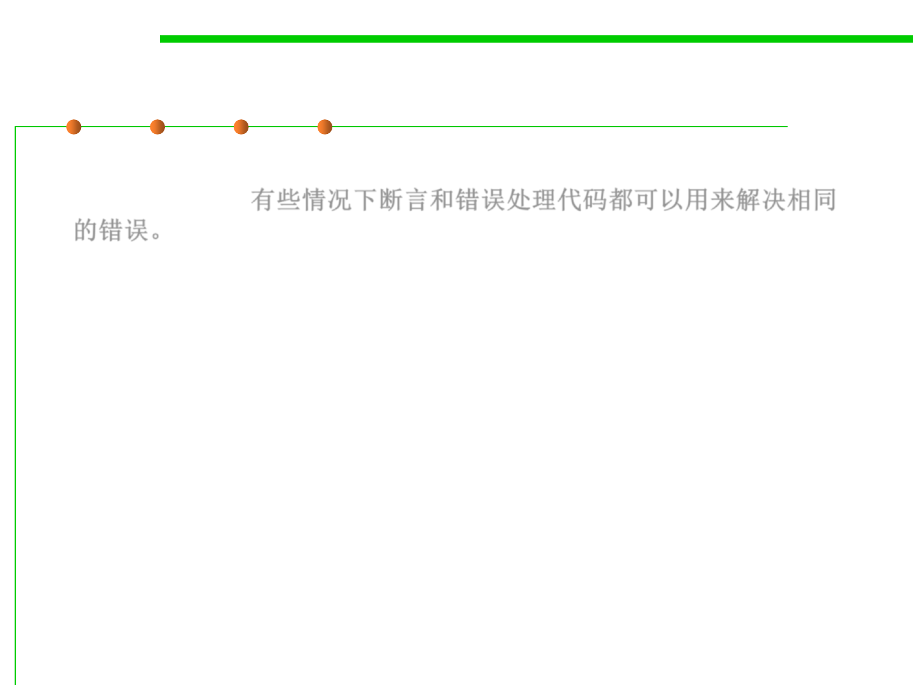

7.3 Assertions and Defensive Programming
Combine assert and error handling for robustness
▪ Both assertions and error handling code might be used to address
the same error. 有些情况下断言和错误处理代码都可以用来解决相同
的错误。
▪ E.g., in the source code for Microsoft Word, for example, conditions
that should always be true are asserted, but such errors are also
handled by error-handling code in case the assertion fails.
▪ For extremely large, complex, long-lived applications like Word,
assertions are valuable because they help to flush out as many
development-time errors as possible.
▪ But the application is so complex (million of lines of code) and has
gone through so many generations of modification that it isn’t
realistic to assume that every conceivable error will be detected
and corrected before the software ships, and so errors must be
handled in the production version of the system as well.